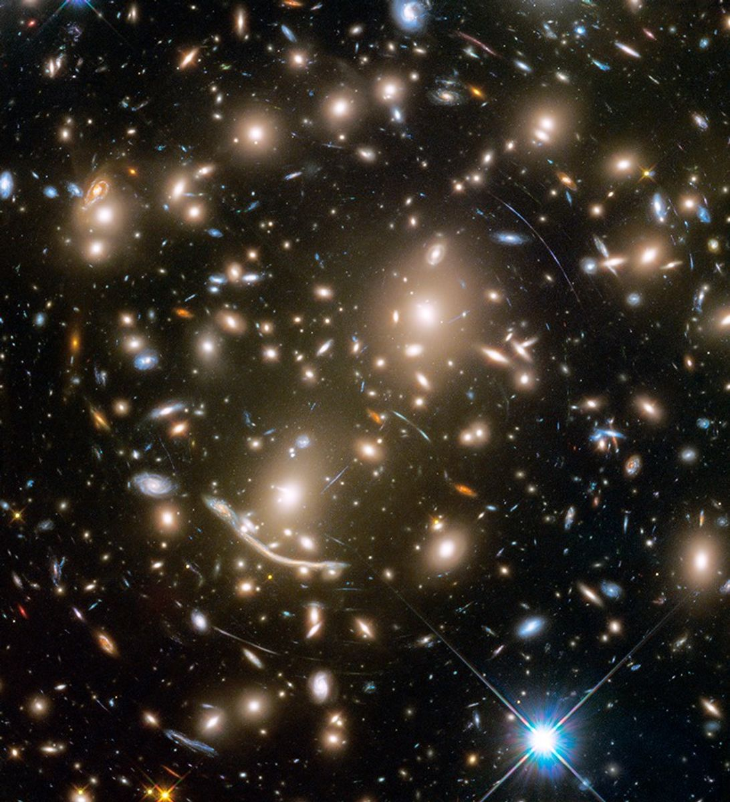
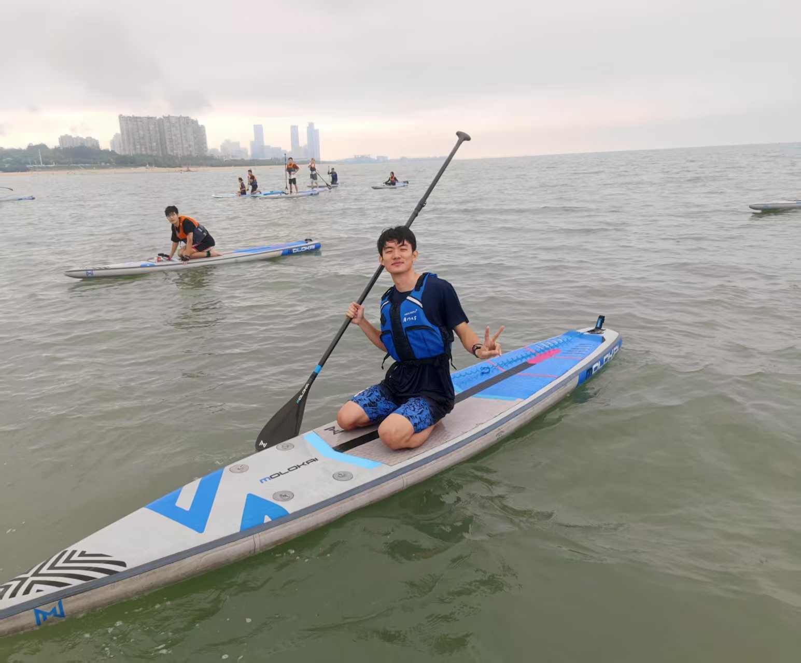

Statistical Strong Lensing
I use strong-lens samples and lensing observables to infer population-level mass distributions of lens galaxies.

Astronomy Ph.D. Student
I am an astronomy Ph.D. student working on statistical strong gravitational lensing, with a focus on lensed quasars, microlensing, and the stellar and dark matter components of galaxy mass distributions.
About
I am currently pursuing a Ph.D. in astronomy in the Department of Astronomy, School of Physics and Astronomy, Shanghai Jiao Tong University, advised by Prof. Alessandro Sonnenfeld. My research centers on statistical strong lensing and uses lensing observables, microlensing statistics, and hierarchical Bayesian inference to understand the stellar mass and dark matter structure of strong-lens galaxies.

Focus
I use strong-lens samples and lensing observables to infer population-level mass distributions of lens galaxies.
I study microlensing statistics in lensed quasars and their role in constraining stellar mass components.
I develop hierarchical models for lens-galaxy populations, accounting for selection effects and connecting observations to physical parameters.
Selected Work
These projects span my Ph.D. and undergraduate research, from statistical strong-lensing inference to radio HI data analysis.
2026 - Present
I analyze lensed quasars selected with the Gaia Multi-Peak method and study how selection effects shape population-level inference.
Read More2024 - 2026
I develop hierarchical Bayesian methods to separate stellar mass components from dark matter density profiles using microlensing effects in lensed quasars.
View Publication2023 - 2024
I processed large-area FAST HI survey data, mapped Galactic high-velocity cloud structures, and compared them with archival HI surveys.
Learn MoreExperience
My training combines astronomical data analysis, strong-lens modeling, scientific computing, and Bayesian statistics.
Researching statistical strong lensing, lensed quasars, microlensing, and galaxy mass distributions.
Zhang, S., et al. Manuscript in preparation.
Undergraduate research on FAST HI data analysis and Galactic high-velocity cloud mapping, advised by Prof. Taotao Fang.
Additional honors include Outstanding Graduate of Xiamen University and Shanghai Astronomical Observatory Scholarships.
Contact
Email, code, researcher identifiers, and CV links are collected on a dedicated contact page.
Open Contact Page